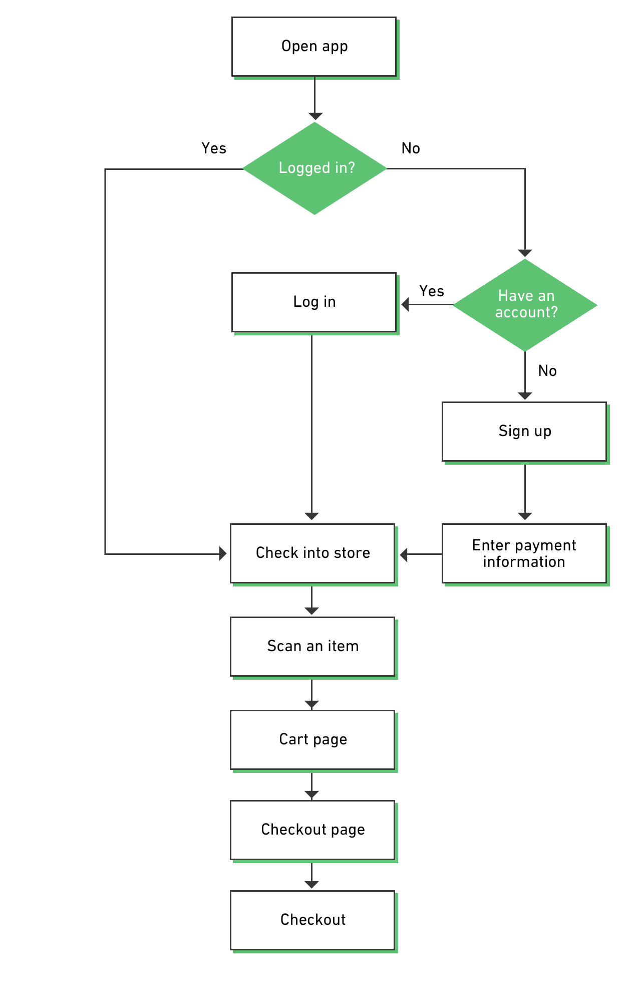

Scan with your phone
Grab the items you need from the store shelf, and scan the barcode with the Skew app on your phone.
Pay without the line
Pay for your groceries seamlessly through the Skew app with your payment information on file.

Your phone is your receipt
When you've paid for your items, just show the QR code receipt to an employee at the door.


RESEARCH LEARNING OBJECTIVES
Checkout
How do shoppers feel about the checkout process at grocery stores?
Navigation
How do shoppers navigate around the store to find items?
Payment
What are some inefficiencies in the payment process?
Planning
How do shoppers plan their grocery shopping in advance?
Self Checkout Line
Does the self checkout line improve the experience for the customers?
MY ROLE
UX Design
Visual Design
Interaction Design
Prototyping
Research
DURATION
3 Weeks
TYPE OF WORK
Personal Project
CONTEXTUAL INQUIRY
For this project, I decided to start my research process with contextual inquiry. I went into a local Safeway and closely observed the behavior of a shopper who agreed to participate in my research.
Key Takeaways
- Shopper planned what he was going to buy in advance, but didn't write them down
- Shopper was frustrated that self checkout line was as long as the regular lines
- When searching for some of the items, shopper had to search through more than one aisle
- Shopper entered his phone number in the touchpad to receive membership discount
- Shopper struggled to use the self checkout machine, even though he has used it before to pay for items
COMPARATIVE ANALYSIS
I also looked into some other apps in the market which are in the similar domain.
Target
- Store map feature
- Option to create a shopping list in advance
- Search and locate items in store
- Online shopping and pick-up feature also available
Key Takeaways
- Map feature can be useful on Skew when finding items
- Shopping list can also be implemented for Skew to help users plan their grocery shopping in advance

Instacart
- List of stores based on current location
- Shopping list feature
- Ability to review past order history
Key Takeaways
- Allow users to check into store based on location
- Implement a history feature where users can review past purchases


Curbside
- Ability to add multiple payment methods
- Store list based on current location
- Search store inventory for items
Key Takeaways
- Simplify payment process for Skew
- Provide a search tool to find items in store
JOURNEY MAP
To understand the major pain points and inefficiencies of the current grocery shopping experience and to brainstorm solutions, I decided to create a journey map based on the contextual inquiry and personal experience.

PERSONA

College Student
"I just want to buy a couple items and leave!"
Chase is a college student living away from home. He doesn't cook too much, so he just buys a few items at a time when he is at the grocery store. He tries to avoid going to large grocery stores because of the long lines, but there aren't too many alternatives for him. He would like for a way to go to the grocery store and buy his favorite items while avoiding the long lines.
Goals
- Buy 3-4 items at a grocery store without waiting in line
- Easily find the items he needs without asking an employee
- Saved purchase history for review
Pain Points
- Long lines at the grocery store
- Walking around in circles to find the item he wants
- Confusing self checkout machines
IDEATION
From all the information and insights we gathered, I decided to focus on these main points for our design.
SELF CHECKOUT
User will be able to conveniently pay for an item without having to wait in line.
SHOPPING LIST
Shopping list feature will allow the users to plan their grocery shopping in advance.
STORE MAP TOOL
Navigating inside the store will be easier with the store map tool showing your current location.
CHASE'S USER FLOW
USE CASE 1
Chase downloads the app for the first time and uses it to buy an item at a grocery store.
USE CASE 2
Chase plans his grocery shopping in advance with the shopping list feature, and navigates with the map tool.
SKETCHES
In order to plan out the interactions and flows between each screens of the experience, I started working on a whiteboard. This process allowed me to start from a bigger point of view, and focus in on each of the steps as the design process continued.
WIREFRAMES

USABILITY TESTING
Because of the limitation in emulating the actual functionality of the app (e.g. item scanning, store map), I decided to create a hi-fidelity prototype on InVision for the usability testing to provide the most realistic experience for the participants as possible.
To simulate a real experience, I paid for the items in advance, and had the participants scan the items with the app and walk out, just as how the real product would work.This was an effective method in testing out the product, and helped out in the iteration leading to the final design.
FINAL DESIGN
The onboarding process is kept short and only asks for the bare minimum information required. This was done to accommodate the desires of the users to be able to quickly use the app to check out, even for their first time use. Paypal was also added as a payment option based on the usability testing feedback.


CHECK IN & SCAN
During the usability testing, users found the map view to be confusing for the check in screen, so the default page was changed to a list view.


CHECKOUT
An option to add payment during the checkout process was also added in the final design. In the case that a user wants to use a new payment method, they can do so without exiting the checkout flow.

MENU & OTHER FEATURES


BRANDING
NEXT STEPS
- Work with grocery store chains (Safeway, Target, Lucky, etc.) to implement Skew
- Design & implement feature to offer users exclusive deals and coupons